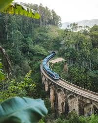
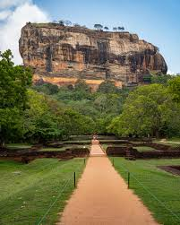
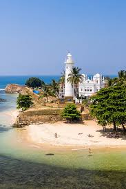

Ella |
Sigiriya |
Galle |
|  |  |  |
A small town nestled in the central highlands of Sri Lanka, Ella offers stunning views, lush tea plantations, and a cool climate. It's perfect for nature lovers and adventure seekers. Activities
|
Known as the "Lion Rock," Sigiriya is an ancient rock fortress and UNESCO World Heritage Site. It combines history, archaeology, and breathtaking landscapes. Activities
|
A historic coastal city famous for its well-preserved Dutch Fort, Galle combines colonial charm with beautiful beaches. Activities
|